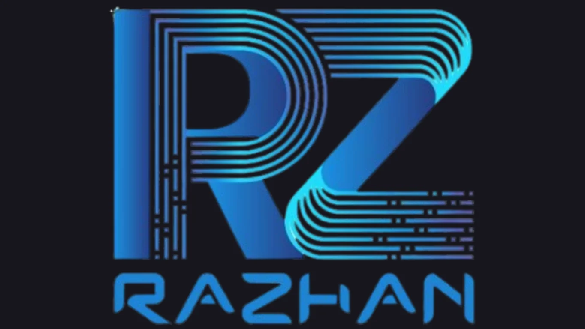

All projects
Collection · Graphic Design
Brand Identity & Logo Design
Logo concepts designed for digital platforms and a software development business.
Collection overview
Identity systems built for recognition
The social-media identity was designed to remain cohesive and recognisable across digital channels including YouTube and social platforms.
The Razhan company mark was developed for a software business, using a technology-focused visual direction.
Selected marks
Logo gallery
Two identity projects from the current portfolio.

Next collection
View collection